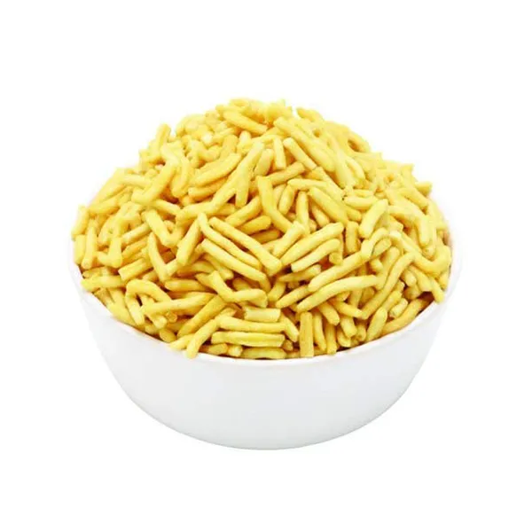

કૂકરમાં બટાકા, ફૂલકોબી, ગાજર અને મટર ઉકાળો. આ બધાને કૂચી લો.
એક પેનમાં તેલ અને બટર ઉમેરી લો. આમાં કાંદા અને લસણ-આદુનો પેસ્ટ ઉમેરો. કાંદા સોનેરી થાય ત્યાં સુધી ભાજો.
હવે શિમલા મરચાં અને ટમેટાં ઉમેરો. ટમેટાં નરમ થાય ત્યાં સુધી પકાવો.
હવે આમાં હળદર પાવડર, લાલ મરચું પાવડર અને પાવ ભાજી મસાલો ઉમેરો. સારી રીતે મિક્સ કરો.
ઉકાળેલા શાકભાજી ઉમેરો અને મિક્સ કરો. આમાં મીઠું ઉમેરો અને સારી રીતે મિક્સ કરો.
જો જરૂર હોય તો થોડું પાણી ઉમેરો અને 10-15 મિનિટ સુધી મધ્યમ તાપે પકાવો.
એક પેનમાં થોડું બટર ગરમ કરો અને પાવના ટુકડાઓને બંને બાજુઓથી સોનેરી થાય ત્યાં સુધી શેકો.
તૈયાર પાવ ભાજીને કોથમીર અને લીમડાના ટુકડાઓથી સજાવીને પાવ સાથે પીરસો.
Dhokla Recipe (ઢોકળા)
1 કપ ચણાનો લોટ
1/2 કપ દહીં
1 ચમચી આદુ-મરચાંનો પેસ્ટ
1/2 ચમચી હળદર પાવડર
1/2 ચમચી લાલ મરચું પાવડર
1/2 ચમચી ઈનો ફ્રૂટ સોલ્ટ
સ્વાદ અનુસાર મીઠું
2 ટેબલસ્પૂન તેલ
1/2 ચમચી રાઈ
કોરીંંંદર પાન (સજાવટ માટે)
કાંદાના પાતળા વાંસ (સજાવટ માટે)
લીમડું (સજાવટ માટે)
method
એક બાઉલમાં ચણાનો લોટ અને દહીં ઉમેરી મિક્સ કરો.
આમાં આદુ-મરચાંનો પેસ્ટ, હળદર પાવડર, લાલ મરચું પાવડર અને મીઠું ઉમેરીને સારી રીતે મિક્સ કરો.
આ મિશ્રણને 15-20 મિનિટ માટે બાજુએ રાખો.
પછી ઈનો ફ્રૂટ સોલ્ટ ઉમેરીને તાત્કાલિક મિક્સ કરો.
એક થાળી અથવા વાડકીમાં તેલ લગાવીને આ મિશ્રણ રેડો.
થાળીને સ્ટીમરમાં રાખો અને ધોકળાને 15-20 મિનિટ માટે સ્ટીમ કરો.
થાળી બહાર કાઢીને ઠંડું થવા દો, અને પછી કાપી લો.
એક પેનમાં 2 ટેબલસ્પૂન તેલ ગરમ કરો અને તેમાં રાઈ ફુટાવો.
તૈયાર ધોકળા પર આ રાઈનો વઘાર કરો.
કોથમીર અને કાંદાના પાતળા વાંસથી સજાવો.
લીમડાનો રસ છાંટી અને ગરમા-ગરમ પીરસો.
Bhavnagari Gathiya Recipe (ભવનગરી ગાંઠિયા)
2 કપ ચણાનો લોટ
1/2 ચમચી અજમો
1/4 ચમચી હિંગ
1/2 ચમચી મીઠું
1/2 ચમચી કાળી મીઠું
1/2 ચમચી લાલ મરચું પાવડર
1/4 ચમચી બેકિંગ સોડા
2 ટેબલસ્પૂન તેલ (લોટમાં મિશ્રણ માટે)
તળવા માટે તેલ
પાણી (લોટ બાંધવા માટે)
લીમડું (સજાવટ માટે)

method
એક મોટી બાઉલમાં ચણાનો લોટ, અજમો, હિંગ, મીઠું, કાળી મીઠું, લાલ મરચું પાવડર અને બેકિંગ સોડા મિક્સ કરો.
હવે આ મિશ્રણમાં 2 ટેબલસ્પૂન તેલ ઉમેરો અને સારી રીતે મિક્સ કરો.
લોટને બાંધવા માટે થોડું પાણી ઉમેરીને મસવી લોટ બાંધો.
લોટને 15-20 મિનિટ માટે બાજુએ રાખો.
એક કડાઈમાં તેલ ગરમ કરો.
ગાંઠિયાં માટેના ચણાનો લોટ મશીનમાં ભરીને તેલમાં ગાંઠિયાં પકવો.
ગાંઠિયાંને સોનેરી ભૂરા થાય ત્યાં સુધી તળો.
તળીને પાપડા ઉપર કાઢી લો જેથી વધારાનું તેલ કાઢી શકાય.
તૈયાર ગાંઠિયાંને લીમડાના ટુકડાઓ સાથે પીરસો.